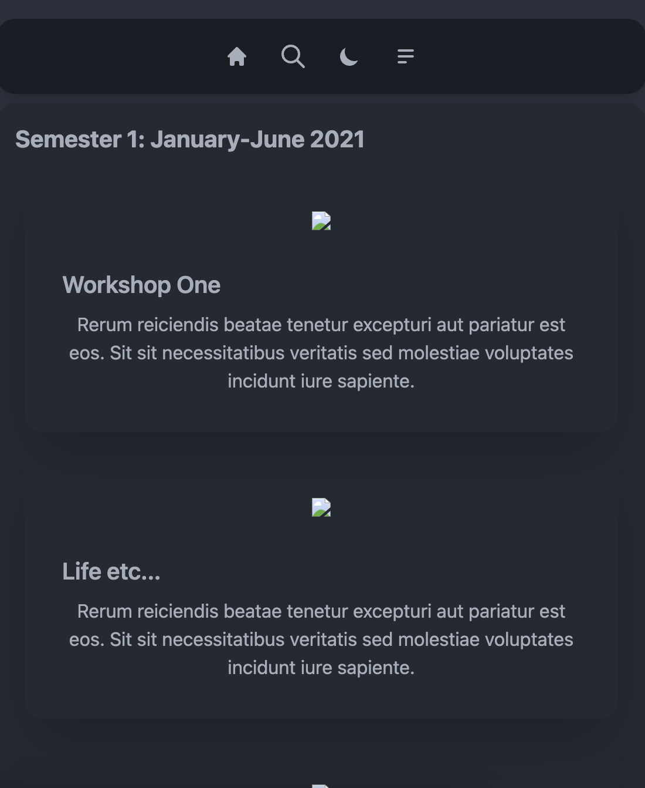
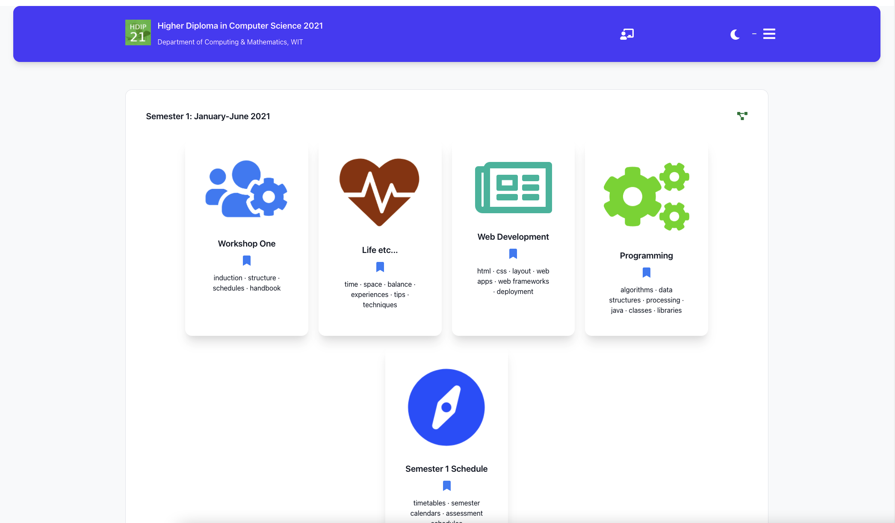
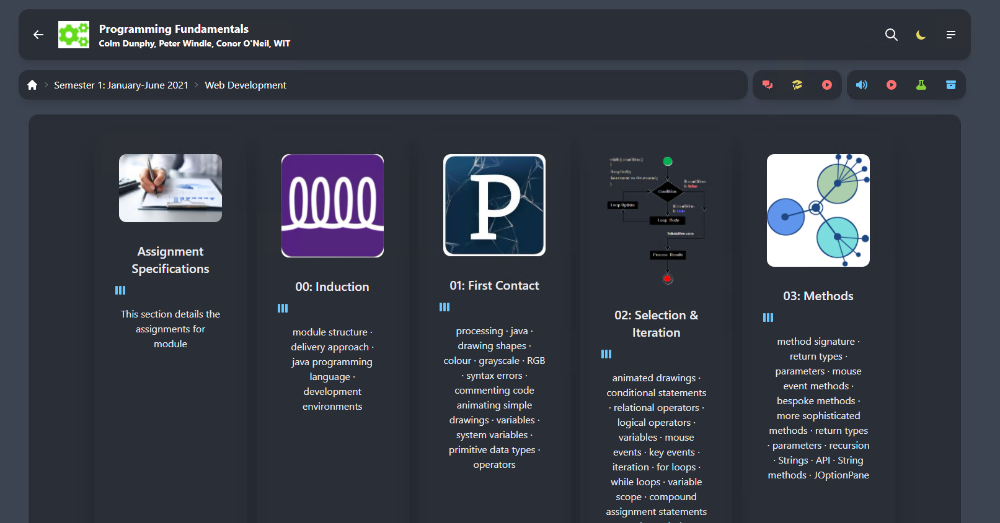
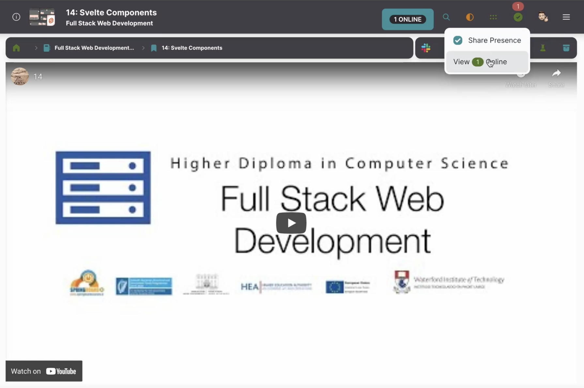
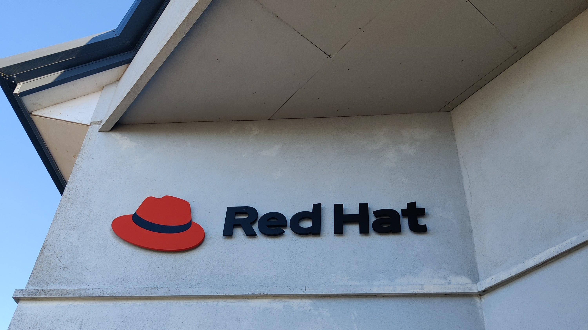
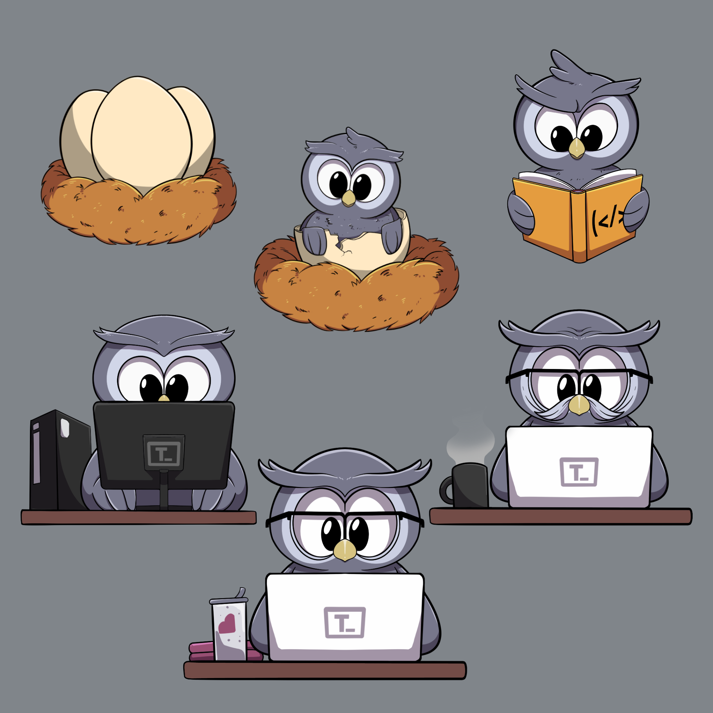

A Final Report by Jordan Harrison
Higher Diploma in Computer Science
Department of Computing & Mathematics, SETU Waterford
20095937@mail.wit.ie / contact@jordanharrison.ie
The Tutors Open Source Project is a collection of components & services supporting the creation of transformative learning experiences using open web standards. The project supports 3 complementary perspectives - the Learner, Educator & Developer experiences. It was originally developed by Eamonn de Leastar, beginning around 10 years ago as a python application with similar principles as it has today - ingesting markdown content to generate either a static site or a zip file which could be uploaded as a lab to Moodle. It has evolved over the past decade, keeping to the same principles, but has been adapted to use modern technologies.
In the summer of 2021, on the 3rd of June, I approached Eamonn De Leastar, a SETU lecturer and the developer of Tutors, with the intention of setting up the Tutors software on my local machine. My goal was to familiarize myself with the codebase and improve the user experience for learners. From that point on, I actively participated in the project, working on it consistently. Although it is unorthodox, I organically onboarded to the Tutors project early on in the course, and as a result grew as a developer because of Tutors and built something that I am proud of.
My objectives for this project was to improve these 4 core areas of the Tutors project, which can be summarized into distinct phases:
In the first semester of my studies, I became a frequent user of Tutors, an educational software. As I used the software on a daily basis, I noticed that the user experience was lacking. Specifically, I found that the software did not have a self-explanatory interface and required users to seek explanations in order to navigate it. This realization motivated me to want to get involved with the project and work on the codebase in order to modernize the frontend design, with the goal of making Tutors more user-friendly for myself and others during the course of my studies. As I began to delve deeper into the project, I developed an acute appreciation for Tutors and became actively engaged in its development. This experience ultimately led me to choose Tutors as the subject of my final project.
In recent years, the rapid advancement of technology has transformed the way we teach and learn. Educational technology, or edtech, has become an increasingly popular tool in classrooms worldwide, as it provides a more interactive and engaging learning experience for students. One of the most widely used edtech tools is the Virtual Learning Environment (VLE), which allows educators to deliver educational content online. Moodle, an open-source VLE, has gained popularity due to its customizable and user-friendly nature, making it an exemplar of the power and potential of edtech.
It's worth noting that there are other online learning platforms that differ from it in some significant ways. Massive Open Online Courses (MOOCs), such as edX and Coursera, are designed to offer free or low-cost online courses to a vast audience of learners worldwide. On the other hand, online environments like Udemy are more geared towards commercial offerings, with instructors creating and selling courses to students. While these platforms can be a great way to learn new skills or gain knowledge, they lack the level of customization and personalization offered by a VLE.
VLEs allows educators to tailor the learning experience to their students' needs and provides a collaborative learning environment that promotes student engagement and interactivity. They offer more opportunities for collaboration and communication between students and instructors - through features like forums, messaging, and video conferencing, students can interact with their peers and teachers, fostering a sense of community and creating a more social learning environment. They also allow students to access educational content at their own pace, allowing them to learn at their own pace and in their own time.
While MOOCs and tutorial sites may offer courses on specific topics, VLEs can provide a complete education experience with integrated courses, assessments, and support systems. Overall, VLEs are a great way to provide a more engaging and interactive learning experience for students, and they are becoming increasingly popular in classrooms worldwide.
The latest web technologies has transformed the way we build web applications, providing developers with powerful tools to create fast and reliable web applications. In this section we are going to be looking into the technologies that has been implemented in Tutors and how they compare to older technologies.
NodeJS is an open-source, cross-platform, JavaScript runtime environment that allows developers to run JavaScript code outside of a web browser. NodeJS is built on the V8 JavaScript engine, the same engine used by Google Chrome, and provides developers with access to a rich set of libraries and modules that allow for the creation of server-side applications. It has a non-blocking I/O model, which means that it can handle multiple requests simultaneously, making it an ideal choice for building scalable and high-performance applications.
TypeScript is a superset of JavaScript that adds optional static typing and other advanced features to the language. TypeScript is fully compatible with NodeJS and provides several benefits over traditional JavaScript. It has excellent interoperability with existing JavaScript code, allowing developers to gradually adopt TypeScript without rewriting their entire codebase. TypeScript enables developers to catch errors early in the development process, reducing the likelihood of bugs and errors in production. This is because TypeScript checks types at compile time, providing early feedback on any type mismatches. It also provides developers with better tooling and IDE support, making it easier to navigate and maintain larger codebases.
NodeJS is a powerful JavaScript runtime environment that allows developers to build high-performance applications. TypeScript provides advanced features like optional static typing and better tooling, which improve the development experience and reduces the likelihood of bugs and errors in production. By using NodeJS with TypeScript, developers can take advantage of the benefits of both technologies, creating scalable, high-performance, and maintainable applications.
Frontend frameworks are a collection of libraries and tools that allow developers to build web applications. They allow developers to build web applications quickly and efficiently, allowing them to focus on the core functionality of their application. Some of the most popular frontend frameworks include React, Vue, Svelte and Angular. Each framework has its own set of features and benefits, but they all share a common goal - to make it easier for developers to build web applications.
SvelteKit, a relatively new framework based on Svelte, has gained popularity due to its lightweight, fast, and flexible nature, making it an excellent choice for building modern web applications. It is built on top of the Svelte compiler, which allows developers to build web applications using a component-based approach. SvelteKit also provides a number of features that make it easier to build web applications, including a router, a store, and a server-side rendering engine. Unlike React, Vue and other frameworks, SvelteKit compiles components during build time, which reduces the size of the final bundle and improves application performance, along with eliminating the need for virtual DOM, resulting in a faster and more efficient runtime. Additionally, SvelteKit is easy to learn and use, providing developers with a simple and intuitive syntax that requires less boilerplate code.
A CSS framework is a pre-designed set of CSS styles and rules that help developers build responsive and visually appealing user interfaces quickly. These frameworks provide a collection of CSS classes that define common UI elements like buttons, forms, and layouts. By using a CSS framework, developers can save time and effort by not having to create styles from scratch. Some of the most popular CSS frameworks include Bootstrap, Tailwind CSS, and Bulma.
Tailwind CSS is a framework that provides developers with a utility-first approach to styling web applications. This means that instead of using predefined CSS classes, developers can use a set of utility classes to create responsive and customizable user interfaces quickly. Tailwind CSS comes with a learning curve compared to typical CSS frameworks, but it provides massive set of pre-defined classes that cover everything from layout and typography to color and spacing. This approach not only speeds up the development process but also allows developers to create consistent and visually appealing user interfaces with ease. Additionally, Tailwind CSS is highly customizable, allowing developers to create their own utility classes and adjust the default settings to fit their specific needs.
Skeleton is a UI library that provides developers with a collection of pre-designed components that can be used to build web applications. It is built specifically for SvelteKit projects and is built on top of Tailwind CSS, which means that it provides developers with a consistent yet customizable user interface. Skeleton is a great choice for developers who want to build web applications quickly and efficiently, as it provides a collection of pre-designed and functional components.
Build systems play a vital role in modern web development, allowing developers to compile, bundle, and optimize their code for production. One popular build system, Webpack, has been the go-to tool for many years and has been pre-bundled with most modern frontend frameworks. However, Vite has emerged as has objectively became a better option due to its faster build times and improved development experience. Vite takes advantage of modern browser features like ES modules and lazy-loading to improve build times significantly. This means that instead of bundling all code upfront, Vite can compile and load code on the fly as it's needed, reducing build times and improving development workflow. Additionally, Vite provides a better development experience with features like hot module replacement, which allows developers to see changes to their code in real-time without reloading the page.
Monorepos are a more recent approach to managing codebases that contain multiple projects or applications. Instead of having separate repositories for each project (polyrepos), a monorepo houses all the projects in one, structured repository. This approach offers several advantages over polyrepos, including better code sharing, improved code quality and streamlined development workflows. With a monorepo, developers can share code between projects more easily, reducing the need for duplicate code, improving code reuse and promoting better code quality, as developers can maintain a single codebase with consistent coding standards and practices. A monorepo simplifies the development workflow by allowing developers to manage multiple projects with a single set of tools and processes, and allows for easier management of dependencies, as developers can manage dependencies for all projects in a single place.
Figure 1 - Tutors Architecture
The Tutors project is a monorepo, which contains all the code for the Tutors project. It is built using TurboRepo, which allows us to have a single repository for the Tutors project, which contains all the code for the project, and allows us to manage the dependencies of the project in a single place. It embraces the JAMStack architecture, which is a modern architecture for building web applications.
All Tutors applications are built on top of NodeJS, a cross-platform JavaScript runtime environment, and are written in TypeScript, a typed superset of JavaScript that compiles to plain JavaScript. The advantage of using TypeScript is that it allows us to write code in a typed manner, which allows us to catch errors at compile time, rather than at runtime. This is especially useful when working with a large codebase, as it allows us to catch errors early on, and to ensure that the code is well structured and easy to read.
Tutors' web applications are built with SvelteKit, a framework which is built on top of Svelte. The user interfaces are built using Skeleton, a UI library built specifically for SvelteKit which is built on top of TailwindCSS. Firebase Realtime Database is for data storage, Auth0 for authentication, GitHub for code storage, and Netlify for hosting.
Tutors courses are built up by the tutors-lib parser as what is effectively an abstract syntax tree. It’s a bit like how a compiler works, but instead of compiling a single file of a formal language we are trying to compile an entire folder structure into an in-memory model.
Courses are learning objects, a course contains topics - and these topics are also learning objects. Topics contain talks, videos, notes, archives & labs and A lab contains chapters. That’s the deep structure of the model that is developed & assembled in-memory by the tutors-lib library.
Tutors-json is the main, more complex course generator. It transforms the course by emitting a copy of all the assets, maintaining the same structure of the course, but encapsulating the deep structure of the course into the tutors.json file. That json file is effectively a serialised version of the structure of the course itself.
The JSON emitter then is traversing the tree, emitting out into the JSON file all the learning objects it encounters - so the emitter structure is basically emitting course, topics, units, videos, archives & so on It’s a fairly short typescript library, around 150 lines or so, which traverses the entire tree & produces a representation in a single json file.
The static site generator then, tutors-html, implements a very similar structure as Tutors JSON. It takes the course and produces a same copy of all the assets, except this time each folder is decorated with html static versions of the course. Tutors HTML is a little more complex than Tutors JSON as far as structure goes, as it has to embody all the styles associated with each page. It uses the Nunjucks templating language & is currently using an old variety of styling from my initial updates on the course reader version, which uses Tailwind & the DaisyUI library.
Again, the HTML emitter emits courses, topics, learning objects, units etc using the same syntax tree that the json emitter is using, except this time it generates much more content, as it has to generate the user experience as a static standalone site.
The html emitter is function complete, but doesn’t include a range of features that the course reader has such as authentication, presence, metrics & a more compelling UX overall. The tutors-html emitter is often looked at as an archive, whereas an educator provides a standalone version of the course content to the students at the end of a semester.
The Tutors Course Reader is the main front end application of the Tutors project. It is a web application which consumes the JSON output of the tutors-json package (usually hosted on Netlify) and renders a course for student consumption. It is built using SvelteKit, and relies on 2 components, tutors-ui and tutors-reader-lib. tutors-ui is the design system which contains all the UI components responsible for rendering the core elements of the reader. tutors-reader-lib is a Typescript library which contains all the logic for the Tutors Course Reader, and is responsible for loading the course from the remote server, long with starting up and driving the metrics & presence models which are used to track student progress & show online status.
The tutors-reader-lib package is where a lot of the 'heavy lifting' is done in downloading the course from the remote service & building up, within the browser, an in-memory model of the course. There is course, lab & topic models, services for analytics, authentication, course, metrics & presence, a stores for the course & some types for authentication, icons, lo (learning objects), metrics & stores.
The models package has a slightly more sophisticated version of the (effective) abstract syntax tree that is equipped with some caching & indexing & also we need to ensure all elements are linkable, so it needs to generate URLs which can be shared. All of that simplifies the hydration. The services is about the ‘intelligence’ as we call it - reading and initialising each of the subsystems.
The tutors-ui package is the design system for the Tutors project. It is built on top of Skeleton, a UI library built specifically for SvelteKit. Skeleton is based on TailwindCSS, and provides a lot of components, utilities & stores which we use to build out the Tutors Course Reader. It also provides a lot of flexibility in terms of how the application is structured, allowing for a lot of customisation.
The initial frontend of Tutors when I started the course was built with Aurelia and used UI Kit for the design (see fig. 1). By the time I had started working on Tutors it had been upgraded to be built with Svelte and TailwindCSS (see fig. 2).

Figure 2 - Tutors Aurelia

Figure 3 - Tutors Svelte
As a student early in my course of study, I had limited experience with frontend development. In order to familiarize myself with the codebase of the Tutors project, I dedicated multiple evenings to learning various tools and technologies such as Git, running code on a local machine, and navigating the codebase to understand its various components. I then conducted research on the tech stack being used, which included Svelte and TailwindCSS, and explored various UI libraries that could potentially improve the user experience when used in conjunction with these technologies. It was during this research that I discovered Daisy UI, an open-source UI component library built on top of TailwindCSS that provides a simplified approach to building User Interfaces through the use of pre-defined component classes.
After confirming that DaisyUI's component library would provide comprehensive coverage for all components needed in Tutors, I proceeded to implement the library in the project. The initial wireframe was created using a combination of TailwindCSS and DaisyUI via Stackblitz, an online code editor. The code for this stage of the project can be accessed here.
During the implementation of DaisyUI I experimented with the colour styles, implemented the theme-switch for dark mode & changing themes and the iconify package for icons. For a more comprehensive overview of my work on this phase of the project, I wrote a blog post which can be seen here. In below figures 3 - 7 I have provided work in progress screenshots of this implementation.

Figure 4 - Tutors early wireframe with DaisyUI

Figure 5 - Tutors early wireframe - mobile responsiveness

Figure 6 - Early work in progress implementing DaisyUI in Tutors

Figure 7 - Mid work in progress implementing DaisyUI in Tutors

Figure 8 - Late work in progress implementing DaisyUI in Tutors
In August 2021, following the successful build and release of Tutors incorporating DaisyUI, Eamonn De Leastar, the developer of Tutors, approached me with an invitation to join the Tutors technical team. At this point, Red Hat had agreed to provide resources for further development of Tutors, including the appointment of a project manager and two engineers to work on Tutors one day a week, with regular meetings to discuss progress on the project. I was excited to have the opportunity to continue contributing to the user experience of Tutors as part of this team.
As part of the Tutors technical team, I worked on the following tasks:

Figure 9 - Preview of the initial implementation of presence
In addition to the work I did on the Tutors codebase, I also worked on the creation of a new domain for Tutors, tutors.dev. The domain was set up to be used alongside, and later replace, the existing Tutors instance on a netlify subdomain. This was done in order to provide a more user-friendly URL for learners to access Tutors and provide a more accessible sole location for the project, with subdomains for each component of the project.
I also worked on a rebrand of tutors with a new, custom logo I designed in Adobe Illustrator (see fig. 9). The logo was designed to be simple, modern and memorable, and to be used in conjunction with the new domain name.

Figure 10 - Tutors logo
In April 2022 I had the opportunity to visit the Red Hat office in Waterford to attend a meeting with the Tutors technical team. During this meeting, we discussed the progress made on the project and the future of Tutors. The meeting was a great opportunity to meet the other members of the team and to discuss the project in person. I presented the UI changes made along with the new tutors logo & domain. I also presented the new themes I had created for Tutors, including the dyslexia-friendly theme. During the meeting, we also got the opportunity to do a 10-for-10 brainstorming workshop. This was a great opportunity to discuss the future of Tutors and to get feedback from the team on the project.

Figure 11 - Red Hat Waterford office
The first task for phase 3 was to build out a monorepo for the Tutors project. This was done to create a single repository which developers can work in on all parts of the Tutors Open Source Project, instead of requiring them to pull multiple repositories to make changes. This provided a more streamlined development experience for contributors to the project. After a lot of research and consideration, I decided that the monorepo would be made using Turborepo.
Turborepo is a tool for managing monorepos. It is a command line tool which allows developers to create a monorepo using a single command. The reason I decided to proceed with Turborepo over other monorepo tools such as Lerna and Yarn Workspaces is that is is built by a well-backed company (Vercel) and is actively maintained. It is very well documented and provides a lot of features out of the box, such as the ability to run scripts across multiple packages in the monorepo, and the ability to run scripts in parallel. It also provides a lot of flexibility in terms of how the monorepo is structured, which allowed me to create a monorepo which suited the Tutors Project's needs.
Before starting to create the monorepo, I had to decide on the structure of the monorepo. After considering this with Eamonn, we decided to structure the monorepo in the following way:
The root of the monorepo would contain the following folders:
apps - this would contain all of the command line applications in the monorepocomponents - this would contain the reusable components of the monoreposites - this would contain the frontend websites of the monorepoThis structure would allow us to create a monorepo which would be easy to navigate and would allow us to easily add new applications and components to the monorepo in the future. We wanted to get the monorepo up and running in a timely manner, to attract developers to the project during the Hacktoberfest 2022 event and to make sure that the monorepo was easy to navigate and understand for the new contributors that would come on board to the project.
This monorepo structure was then added to a new repository on GitHub, tutors-sdk/tutors, which was named to ensure the project was easily searchable on GitHub. To ensure it was easily identifiable as the main repository for the Tutors project, it was pinned to the top of the tutors-sdk profile.
Alongside the monorepo, I decided to put time into building out a design system for the Tutors project. This was done to provide a consistent user experience across all of the Tutors applications and to make it easier for developers to contribute to the project. In order to fill out this package with components, I taken an atomic design approach to the design system. This approach involved breaking down the design system into smaller components, which could then be combined to create more complex components. This approach allowed for a more modular design system, which can be easily extended and modified in the future.
Initially, this was built in the lib folder of the course reader application, but later was formed into it's own package in the monorepo. This was done to make it easier for developers to access the design system, allowing multiple applications to use it's components, and to make it easier to maintain the design system in the future.
With the new domain and branding in place, and a single repository for the Tutors project, I worked with Eamonn to apply for a Netlify Open Source License. This license provided Tutors with a Netlify Open Source license on our account, which provided us with the same level of features as the Netlify pro plan, such as access from the organization github repo, multiple concurrent builds, a larger bandwidth allocation, multiple user access, shared environment variables & continuous deployment. This was a great opportunity to provide Tutors with a more reliable hosting solution and to provide the project with a more professional look.
In order to prepare Tutors for the Netlify Open Source License, I worked on the following tasks:
Come the end of September 2022, the Tutors repo was ready for participants to come on board during Hacktoberfest, an event which attracts and encourages developers to work on Open Source projects, with companies giving out free swag for participants. It was an ideal opportunity to get the word out about the Tutors project and to attract new contributors to the project. I worked with Eamonn to create a list of issues for contributors to work on during Hacktoberfest. These issues were a mix of bug fixes, feature requests and documentation improvements.
As you can see here 41 pull requests were merged during Hacktoberfest 2022, with 16 of these pull requests being raised by 6 new contributors to the project. This was a peak time for contributions to the Tutors repo for the year, as seen in Figure 11 below. This was a great success for the project and was a great opportunity to get the word out about the project and to attract new contributors to the project.

Figure 12 - GitHub Contributions around the time of Hacktoberfest 2022
While attending NodeConf EU 2022, I met Patty - one of the organisers of DevFest at Google Developer Group Glasgow. While helping her with her workshop for the conference I got talking about my work on Tutors, and I was invited to speak at GDG Glasgow in November 2022. I was very excited to speak at GDG Glasgow about my experience working on the Tutors project and talk about the architecture of the project, which is outlined further in this report.
In preparation for this talk, I sat down with Eamonn and we discussed the format of the talk and how it would be delivered. We decided that the talk would be a 45 minute deep dive, with 10-15 minutes for questions at the end. We also decided that the talk would be delivered remotely, as I was unable to attend in person. The talk was delivered via livestream to the GDG Glasgow YouTube channel. The recording of the livestream from this talk can be found here.
After the success we had during Hacktoberfest 2022, and with the looming new cohort of students coming in January to the HDip course, we decided to move ahead with building the next generation of Tutors. This was a complete rewrite of the Tutors project, using the latest technologies and best practices. The new version of Tutors was to be built using SvelteKit, a framework for building web applications using Svelte, which is what the previous version of Tutors was built upon. This worked out very timely, as SvelteKit version 1.0 was released when we were starting to work on the new version of Tutors. This meant that we knew we were using a stable, production-ready and well supported framework for the new version of Tutors.
Due to my experience with Svelte, I was very excited to work on the new version of Tutors using SvelteKit. I had been following the development of SvelteKit for a while and was very excited to see it released. I had also been following the development of Skeleton, a SvelteKit focused UI library. It was clear that SvelteKit was going to be a great fit for the new version of Tutors, being built on top of Svelte, and providing a lot of important new features, such as server-side rendering and a built in file-based routing system. It also provides a lot of flexibility in terms of how the application was structured, which allowed us to create a structure which suited the Tutors Project's needs.
Eamonn taken the liberty of doing the migration of the current designed Tutors Course Reader to SvelteKit. This was a great opportunity for me to get familiar with SvelteKit and to learn how to use it. I also got the opportunity to work on the new Tutors Course Reader design, which was to be done in Skeleton, and migrate the components of the course reader into the tutors-ui library.
Once the Sveltekit version of Tutors was built, I took to work on the new Tutors Course Reader design and, in turn, create the tutors-ui library. This was done in Skeleton, a UI library built specifically for SvelteKit. Skeleton is a UI library which is built on top of TailwindCSS, and provides a lot of components which can be used to build out a SvelteKit application. It also provides a lot of flexibility in terms of how the application is structured, allowing for a lot of customisation. It was much less opinionated than other UI libraries, such as DaisyUI, which was a big plus for me as we needed something we could tailor to our needs more.
In order to display the components of the design system, I created a Storybook instance for the tutors-ui library. I initially looked into alternatives to Storybook, and came across Vitebook - but this ended up being depracated and stopped being maintained after I started working with it, so I settled on Storybook as it is a leader in this space it made sense to go with a well established solution.
In order to facilitate the new version of Tutors, we decided to update the structure of the monorepo. The following was the updated folder structure that we decided on:
apps - this contains all the front end applications in the monorepo
course - the course reader application built in SvelteKithome - the home page of the Tutors projecttime - the tutors time application built in SvelteKitcli - this contains all the command line applications in the monorepo
tutors-gen - a new generation tool for emitting json output of coursestutors-html - the old html emitter for courses to output a static html websitetutors-json - the old json emitter for courses to output a json filepackages - this contains all the reusable components of the monorepo
tutors-lib - the core library for the Tutors projecttutors-reader-lib - the core library for the Tutors Course Readertutors-ui - the design system for the Tutors projectOnce we felt that the new version of the tutors course reader was almost ready for release, we decided to do a soft launch. This was done by creating a new branch in the monorepo,along with a new subdomain, which was alpha.tutors.dev. This allowed us to test the new version of the Tutors course reader in a production environment, and for lecturers to get early access to the new version to ensure their courses would work seamlessly after the upgrade. A week later, another branch was created as a beta release, which was then deployed to the beta.tutors.dev subdomain. This allowed us to get more feedback from a wider audience on the new version of Tutors, being shared to the students on the HDip in Computer Science 2021 and 2022 cohorts, and to iron out any bugs that were found.
Once we felt that the new version of the Tutors course reader was ready for release, we merged the beta branch into the main branch. This was a very exciting moment for the project, as we had put a lot of work into this release, which came with many exciting new features and upgrades, so it was great to see it finally released.
When we released the new version of Tutors, I decided to automate the release process as much as possible. This was done using Netlify automation, which allowed me to automatically deploy all applications of the monorepo to their own subdomain. This was done by creating a new Netlify site, which was connected to the main branch of the monorepo. This allowed me to automatically deploy a new version whenever a new commit was pushed to the main branch of the monorepo.
In order to prevent any accidental deployments, I changed the default branch on the github repo to the 'development' branch, along with protecting both the main and development branches from deployments. I set this up for pull requests to require an approval from a maintainer (Eamonn or myself) before it could be merged. The development branch is then used as a beta-like branch, allowing us to test new versions of Tutors in a production-like environment before merging into the 'main' branch / production.
In March 2022 I applied to Holopin's open source program, which would allow us to assign a digital badge to developers who contribute to the Tutors project. We were accepted into the program and I set up an account for the Tutors project. I then set about creating the badges for the Tutors project, which were to be awarded to contributors who had contributed to the project.
To make the badges more fun, I decided to create a mascot for the Tutors project. I came up with 'Oscar the Owl' as the mascot, due to owls being regarded as wise in many stories and myths. I then, to come up with ideas, decided to use DALL-E, an AI text prompt to image generator, to generate some ideas for the mascot design.
After multiple iterations using AI for generation, I came up with the following design for Oscar the Owl, the first badge for the Tutors project:
Figure 13 - Oscar the Owl
After creating this badge, I assigned it to those who had contributed to the Tutors project in the past, as a limited edition holopin. For an ongoing Holpin allocation, I decided it would be best to use Holopin's evolving badges feature. This allowed me to create a badge which would 'evolve' alongside the number of contributions a person makes to the Tutors project, providing a Tamagochi-like experience and gamifying contributions to the project. This is a great feature, as it allows us to reward those who contribute more than once to the Tutors project.
For this, I needed more than AI to come up with ideas. I took to Fiverr to find a designer who could help me create the evolving badges. I searched for designers with a style which appealed to be and I came across KabilahStudio. His art style was very appealing and after contacting him and discussing my requirements I hired him to design the evolving badges. I was very pleased with the final outcome of this.

Figure 14 - Evolving badges for the Tutors project
In order to set this up, I installed the holopin bot to the Tutors repo and created a holopin.yml file which contained the data of the holopin badges. Once this was created, the bot then automatically assigns holobytes which are earned to unlock the badges to contributors.
Looking back on the time that I have spent working on Tutors, I am very happy with the work that I have done. I have learned a lot about the Tutors project, and many things about third level course delivery, and believe that I have been able to contribute to the project in a meaningful and impactful way. I have also learned a lot about - and gained an appreciation for - the open source community, and the work that goes into maintaining an open source project.
I have learned a lot about the tools that I have used to work on the Tutors project, and have been able to use the project to learn more about many different technologies and areas of software development. I have also learned a lot about the software development process, and how to work on a project with others.
The area that I am most proud to have worked on is the improvement on the developer experience. Although I really enjoy frontend development and improving the experience for the learner, I have thoroughly enjoyed learning how to improve the experience for developers on a project. I honestly believe this is the most impactful change that I have made - setting up the monorepo, opening the project up to hacktoberfest contributions, setting up holopin to 'gameify' the contribution process and reward contributors has truly opened up the project to onboard new contributors much more easily, and has allowed current contributors to work on the project much more efficiently.
If I were to criticise my learning path, I would have looked into on the backend of the project at an earlier stage. I have enjoyed working on the frontend, and later the developer experience, of the project; but I feel that I could have learned a lot more about the project if I had worked on the backend and understood it more earlier on.
I would also have liked to have put some time into talking to lecturers and students about Tutors, and how they use it. I feel that I could have provided a better experience for the users of Tutors if I had a better understanding of how they use it.
The biggest problem that I encountered at the beginning was the lack of documentation for the project. I had to spend a lot of time reading the codebase to try to understand how it worked, and how to make changes to it. This was a very time consuming process, and I feel that it would have been much easier if there was more documentation. This was something that was improved shortly after I started working on the project, and I am very happy to see that there is now much more documentation for the project.
When setting up the initial design changes with DaisyUI, as I was new to software development, I had trouble getting some functionality to work. I had to spend some time reading the documentation for DaisyUI and TailwindCSS to understand how to use them, and how to get the functionality that I wanted. If I did not understand it for a while, I was lucky enough to have Eamonn to contact to get the support I needed to get things working, such as the breadcrumb navigation.
I intend to continue to contribute to the Tutors project in the future. I have really enjoyed working on the project, and I feel that I have been able to make a meaningful contribution to it.
In order to formalise the work that needs to be done in the future, I have created a GitHub Project for the Tutors project, which contains a 'backlog' / list of issues that need to be worked on. This backlog contains issues that I have identified as needing to be worked on, and I hope that it will be a useful resource for future contributors to the project. I intend to work on these issues in the future, and I plan to continue maintaining the project.
Alongside this, I have set up GitHub Issues which will allow lecturers and other users of the project to report bugs and issues that they encounter when using the project. This will allow us to improve the project and provide fixes for things that break, along with providing a way for users to request new features. It also gives open source contributors visibility on what needs to be worked on, and allows them to work on issues that they may be interested in to contribute to the project.
In the long term, the main issue that I see needs to be worked on now is improving the educator experience. The current format of building courses via markdown files in a defined folder structure is not very user friendly, and I believe that it would be much better to have a web interface for educators to build courses. This would allow them to build courses much more easily, be more maintainable, and perhaps extend the current functionality much more than is currently there, such as quizzes and interactive content.
Atomic design by Brad Frost. Available at: https://atomicdesign.bradfrost.com/ (Accessed: 2022-2023).
GitHub.com help documentation, GitHub Docs. Available at: https://docs.github.com/en (Accessed: 2021-2023).
Holopin documentation. Available at: https://docs.holopin.com/ (Accessed: 2023).
ICONIFY documentation. Available at: https://docs.iconify.design/ (Accessed: 2021-2023).
Monorepo Handbook – turborepo, Turbo, Available at: https://turbo.build/repo/docs/handbook (Accessed: 2022-2023).
Start building - auth0 docs. Available at: https://auth0.com/docs (Accessed: 2022-2023).
Svelte documentation, Svelte Docs. Available at: https://svelte.dev/docs (Accessed: 2021-2023).
Tailwind CSS Components, daisyUI. Available at: https://daisyui.com/ (Accessed: 2021-2022).
The starting point for learning typescript, TypeScript. Available at: https://www.typescriptlang.org/docs/ (Accessed: 2021-2023).
UI toolkit for svelte + tailwind, Skeleton. Available at: https://www.skeleton.dev/ (Accessed: 2022-2023).
Welcome to netlify, Netlify Docs. Available at: https://docs.netlify.com/ (Accessed: 2021-2023).